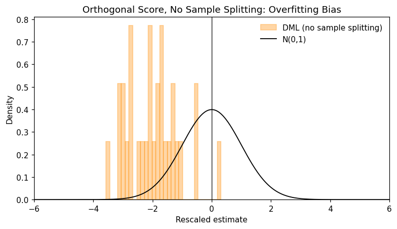
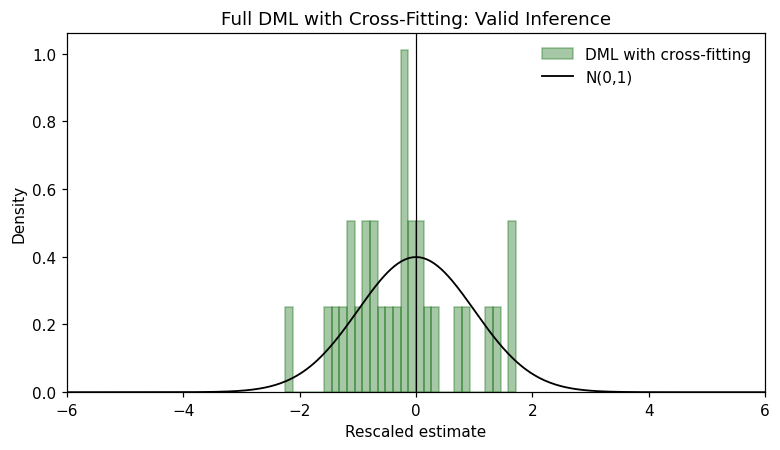
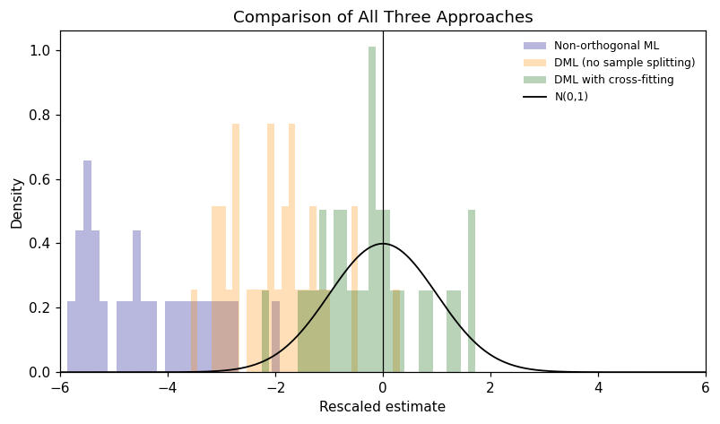
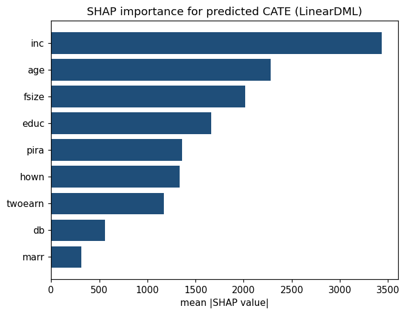
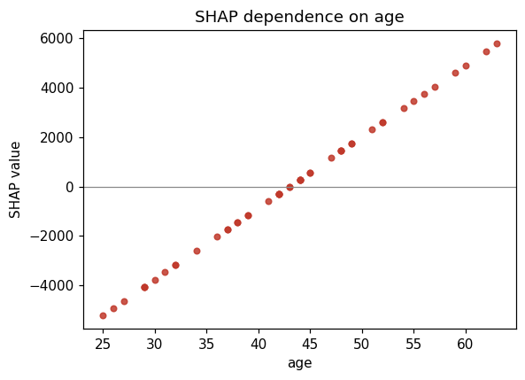
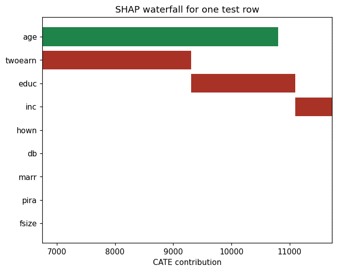

Double/debiased machine learning (DML) provides valid causal inference when flexible ML methods are used to control for high-dimensional confounding. Standard ML estimators are ill-suited to causal questions: regularization shrinks coefficients toward zero (introducing bias in \(\hat{\theta}\)), and fitting nuisance functions on the same data used for causal estimation causes overfitting bias. DML corrects both problems by combining Neyman-orthogonal scores, sample splitting, and cross-fitting, yielding \(\sqrt{n}\)-consistent, asymptotically normal estimates of causal parameters.
This notebook is organized in two parts:
Part A — Synthetic data: builds intuition by simulating the partially linear model and comparing three estimators side-by-side — naive ML (biased), orthogonalized ML without sample splitting (overfitting bias), and full DML with cross-fitting (valid inference).
Part B — Real-world application: applies DML to the 401(k) eligibility dataset in Data/data_401k.csv, covering a train–test split, causal estimation with PartiallyLinearDML, holdout validation of nuisance predictions, and SHAP interpretation of heterogeneous treatment effects with LinearDML.explain.
Overview
ML models predict well but produce biased causal estimates because regularization (for example, a shallow random forest or a penalized regression) distorts the coefficients we care about. The table below summarizes the three challenges DML addresses and how it addresses each one.
Challenge
Why it matters
DML’s response
Regularization bias
ML shrinks nuisance fits, which contaminates \(\hat{\theta}\)
Neyman-orthogonal scores (partialling-out or IV-type) make \(\hat{\theta}\) insensitive to first-order nuisance errors
Overfitting bias
Using the same data for ML nuisances and for estimating \(\theta\) inflates apparent fit
Sample splitting: train nuisances on one fold, estimate \(\theta\) on another
High-dimensional confounders
Classical OLS breaks down when \(p \gg n\) or relationships are non-linear
Cross-fitting combines both halves of the sample split by rotating roles across \(K\) folds, so no observations are wasted.
The Partially Linear Regression (PLR) Model
Both parts of this notebook use the partially linear regression (PLR) model, which separates the linear treatment effect \(\theta_0\) from the nonparametric confounding functions \(g_0\) and \(m_0\):
Throughout this notebook the causal estimators come from PyCausalML. Part A writes the three scores explicitly — non-orthogonal, IV-type, and partialling-out — so the source of the bias is visible. The cross-fitted partialling-out estimator is the same construction as PartiallyLinearDML. Part B calls PartiallyLinearDML and LinearDML directly on Data/data_401k.csv.
Set Up
Code
import subprocessimport sysfrom pathlib import Pathdef _repo_root() -> Path: here = Path.cwd().resolve()for cand in [here, *here.parents]:if (cand /"pyproject.toml").is_file() and (cand /"src"/"pycausalml").is_dir():return candraiseFileNotFoundError("PyCausalML repository was not found. Run this notebook from the repository." )root = _repo_root()data_dir = root /"Data"ifnot data_dir.is_dir():raiseFileNotFoundError("The Data directory was not found. It should sit next to pyproject.toml." )try:import pycausalml # noqa: F401print("PyCausalML ready.")exceptImportError: subprocess.check_call( [sys.executable, "-m", "pip", "install", "-q", "-e", f"{root}[plot]"], )print("PyCausalML installed.")print("Data directory:", data_dir)
PyCausalML ready.
Data directory: /home/zia207/Github/PyCausalML/Data
Part A uses Monte Carlo simulation to make the bias problems visible. We draw replications of the partially linear model from Chernozhukov et al. (2018) and compare the distribution of the rescaled estimator \((\hat{\theta} - \theta_0) / \hat{\text{se}}\) against \(\mathcal{N}(0,1)\) under three approaches. A valid estimator produces a histogram that matches the standard normal; deviations expose regularization or overfitting bias.
Each replication draws \(n = 500\) observations with \(p = 20\) covariates. The extra coordinates are pure noise, which is what makes a regularized forest shrink \(g_0\). The Monte Carlo uses 30 replications so the notebook finishes in one pass; increase n_rep for a tighter histogram.
A.1 Generate Simulated Data
Code
def make_plr_ccddhnr2018(n_obs, dim_x, alpha, rng):"""Partially linear DGP from Chernozhukov et al. (2018).""" index = np.arange(dim_x) cov =0.7** np.abs(index[:, None] - index[None, :]) x = rng.multivariate_normal(np.zeros(dim_x), cov, size=n_obs) m0 = x[:, 0] +0.25/ (1.0+ np.exp(-x[:, 2])) g0 =1.0/ (1.0+ np.exp(-x[:, 0])) +0.25* x[:, 2] d = m0 + rng.normal(size=n_obs) y = alpha * d + g0 + rng.normal(size=n_obs) columns = [f"X{j +1}"for j inrange(dim_x)] frame = pd.DataFrame(x, columns=columns) frame["d"] = d frame["y"] = yreturn framedef forest(seed):return RandomForestRegressor( n_estimators=40, max_depth=4, min_samples_leaf=5, random_state=seed, n_jobs=1, )def _predict_nuisance(X, target, n_splits, seed, cross_fit):ifnot cross_fit: model = forest(seed) model.fit(X, target)return model.predict(X) pred = np.zeros(len(target)) splitter = KFold(n_splits=n_splits, shuffle=True, random_state=seed)for fold, (tr, te) inenumerate(splitter.split(X)): model = forest(seed + fold) model.fit(X[tr], target[tr]) pred[te] = model.predict(X[te])return preddef plr_estimate(X, d, y, score, cross_fit, seed, n_splits=2):"""Return (theta, se) for one PLR score. score='nonorth' uses only the outcome nuisance and a single sample split. score='iv' residualizes Y with g(X) and instruments D with D - m(X). score='partial' residualizes both Y and D (the PartiallyLinearDML score). """if score =="nonorth": splitter = KFold(n_splits=2, shuffle=True, random_state=seed) tr, te =next(splitter.split(X)) model = forest(seed) model.fit(X[tr], y[tr]) g_hat = model.predict(X[te]) d_te, y_te = d[te], y[te] theta =float(np.dot(d_te, y_te - g_hat) / np.dot(d_te, d_te)) resid = d_te * (y_te - g_hat - theta * d_te) se =float(np.std(resid, ddof=1) / (np.sqrt(len(te)) * np.mean(d_te **2)))return theta, se g_hat = _predict_nuisance(X, y, n_splits, seed, cross_fit) m_hat = _predict_nuisance(X, d, n_splits, seed +17, cross_fit)if score =="iv": v_hat = d - m_hat u_hat = y - g_hat denom =float(np.dot(v_hat, d)) theta =float(np.dot(v_hat, u_hat) / denom) psi = v_hat * (u_hat - theta * d) / np.mean(v_hat * d)elif score =="partial": y_res = y - g_hat d_res = d - m_hat denom =float(np.dot(d_res, d_res)) theta =float(np.dot(d_res, y_res) / denom) psi = d_res * (y_res - theta * d_res) / np.mean(d_res **2)else:raiseValueError(score) se =float(np.std(psi, ddof=1) / np.sqrt(len(psi)))return theta, sedef replicate(datasets, score, cross_fit, seed): theta = np.empty(len(datasets)) se = np.empty(len(datasets))for i, frame inenumerate(datasets): x_cols = [c for c in frame.columns if c.startswith("X")] theta[i], se[i] = plr_estimate( frame[x_cols].to_numpy(), frame["d"].to_numpy(), frame["y"].to_numpy(), score=score, cross_fit=cross_fit, seed=seed + i, )return theta, serng = np.random.default_rng(1234)n_rep =30n_obs =500n_vars =20alpha =0.5datasets = [make_plr_ccddhnr2018(n_obs, n_vars, alpha, rng) for _ inrange(n_rep)]datasets[0].head()
X1
X2
X3
X4
X5
X6
X7
X8
X9
X10
...
X13
X14
X15
X16
X17
X18
X19
X20
d
y
0
-0.835221
-0.124267
1.589069
1.751438
2.626595
1.851129
0.103141
-0.405645
-0.611519
1.110242
...
0.640197
1.773906
0.411589
0.989881
0.943173
-0.314249
1.190312
1.350330
-1.305642
-0.350469
1
0.599646
-0.523910
0.190086
1.121859
1.092862
1.040196
0.541563
-0.088291
-0.261876
-0.498918
...
-0.415038
-1.116630
-1.143365
0.725883
-0.465223
0.225297
0.459585
0.555681
2.087219
2.418215
2
0.311204
0.041244
1.065855
-0.400307
-0.244778
-0.061993
-0.033064
-0.300112
-0.386585
1.415881
...
2.543828
0.693934
1.331406
0.146785
1.826707
1.174719
0.879243
1.194841
2.572813
2.947322
3
-0.971602
-0.108555
-0.178463
0.421183
-0.075388
-0.320963
-1.289692
0.795079
0.023707
-0.631630
...
-0.352978
-0.856797
0.091880
0.261878
0.563516
0.428166
-0.743977
-0.727835
-1.455845
-1.966873
4
-0.554568
0.171370
0.753571
-0.197624
-0.242975
-0.180769
-0.165187
-2.000960
-1.769597
-1.104878
...
0.185810
-0.467623
-0.966863
-0.906213
-1.165086
-0.325888
0.965086
2.065493
1.152327
0.809282
5 rows × 22 columns
A.2 Define Shared Learners
Both nuisance functions (\(g_0\) and \(m_0\)) are estimated with a random forest (40 trees, max depth 4). The same specification is rebuilt for every replication so the hyperparameters stay fixed. PartiallyLinearDML uses the same forest family through model_y="rf".
This uses a non-orthogonal score. Regularization bias from estimating \(g_0\) with ML does not vanish; \(\sqrt{n}(\hat{\theta}_0 - \theta_0)\) does not stay bounded.
A.3.1 Define Non-Orthogonal Score
The score below uses only \(\hat{g}(X)\) to residualize \(Y\), ignoring \(D\)’s dependence on \(X\). The moment condition is therefore not orthogonal.
Under valid inference, \((\hat{\theta} - \theta_0) / \hat{\text{se}}\) should follow \(\mathcal{N}(0,1)\). For the naive estimator it does not: the histogram is shifted and spread, revealing regularization bias from the forest’s shrinkage of \(g_0(X)\).
A.4 Approach 2 — Orthogonalized ML, No Sample Splitting
Orthogonalization removes the leading regularization bias by partialling \(X\) out of \(D\) as well. Let \(\hat{V} = D - \hat{m}(X)\) and use the IV-type score:
A.4.2 Plot Distribution — Orthogonal, No Sample Splitting
Code
t_orth_nosplit = (theta_orth_nosplit - alpha) / se_orth_nosplitplot_t_hist( t_orth_nosplit,"Orthogonal Score, No Sample Splitting: Overfitting Bias","darkorange","DML (no sample splitting)",)

Even with an orthogonal score, omitting sample splitting allows overfitting bias to persist. Extreme or non-finite t-values (filtered in the histogram) are a characteristic symptom.
A.5 Approach 3 — Full DML with Cross-Fitting (IV-Type Score)
Cross-fitting completes the fix. With two folds, nuisances are trained on one fold and \(\theta\) estimated on the held-out fold; the roles are then swapped and the estimates combined. This eliminates both regularization bias (orthogonal score) and overfitting bias (sample splitting) while using all observations.
t_dml = (theta_dml - alpha) / se_dmlplot_t_hist(t_dml, "Full DML with Cross-Fitting: Valid Inference", "darkgreen", "DML with cross-fitting")

The rescaled estimates now sit much closer to \(\mathcal{N}(0,1)\), confirming that combining an orthogonal score with cross-fitting restores valid inference.
A.6 Comparison: All Three IV-Type Approaches
Code
fig, ax = plt.subplots(figsize=(7.4, 4.4))grid = np.linspace(-6, 6, 400)specs = [ (t_nonorth, "darkblue", "Non-orthogonal ML"), (t_orth_nosplit, "darkorange", "DML (no sample splitting)"), (t_dml, "darkgreen", "DML with cross-fitting"),]for values, color, label in specs: finite = np.asarray(values, dtype=float) finite = finite[np.isfinite(finite)] ax.hist(finite, bins=30, density=True, alpha=0.28, color=color, label=label)ax.plot(grid, stats.norm.pdf(grid), color="black", lw=1.2, label="N(0,1)")ax.axvline(0, color="black", lw=0.8)ax.set_xlim(-6, 6)ax.set_xlabel("Rescaled estimate")ax.set_ylabel("Density")ax.set_title("Comparison of All Three Approaches")ax.legend(frameon=False, fontsize=8)fig.tight_layout()

The three histograms make the progression concrete: naive ML (blue) is shifted and spread; orthogonal without splitting (orange) is better but still distorted; full DML with cross-fitting (green) is the one that lines up with \(\mathcal{N}(0,1)\).
A.7 Partialling-Out Score
The partialling-out score is the most common choice in practice. It uses \(\ell_0(X) = \mathbb{E}[Y|X]\) and \(m_0(X) = \mathbb{E}[D|X]\) directly. The orthogonal moment condition is:
PartiallyLinearDML solves this score. We repeat the no-splitting versus cross-fitting comparison to confirm that the result holds independently of which orthogonal score is used.
theta_dml_po, se_dml_po = replicate(datasets, score="partial", cross_fit=True, seed=5555)# The same score, called through PyCausalML on the first replication.frame0 = datasets[0]x_cols = [c for c in frame0.columns if c.startswith("X")]package_fit = PartiallyLinearDML( discrete_treatment=False, n_splits=2, model_y="rf", n_estimators=40, random_state=5555,)package_fit.fit(frame0[x_cols], frame0["d"], frame0["y"], feature_names=x_cols)print("Manual cross-fit mean theta:", round(float(np.mean(theta_dml_po)), 4))print("PartiallyLinearDML on replication 1:", package_fit.average_treatment_effect())
Manual cross-fit mean theta: 0.4751
PartiallyLinearDML on replication 1: {'estimate': 0.39925797346729136, 'std.err': 0.04753551277103456, 'ci_lower': 0.3060900804494199, 'ci_upper': 0.49242586648516284}
A.7.3 Plot Distribution — Partialling-Out with Cross-Fitting
Both scores achieve approximately valid inference when combined with cross-fitting. The two distributions are close in practice, which supports using whichever score is computationally simpler for a given problem.
A.7.5 Summary Table — Simulation Results
Code
names = ["Non-orthogonal ML","IV-type, no sample splitting","IV-type with cross-fitting","Partialling-out, no sample splitting","Partialling-out with cross-fitting",]estimates = [theta_nonorth, theta_orth_nosplit, theta_dml, theta_po_nosplit, theta_dml_po]summary_sim = pd.DataFrame([ {"Approach": name,"Mean estimate": round(float(np.nanmean(est)), 4),"SD": round(float(np.nanstd(est, ddof=1)), 4),"Bias": round(float(np.nanmean(est) - alpha), 4), }for name, est inzip(names, estimates)])print(f"Simulation results across {n_rep} replications (true theta_0 = {alpha})")summary_sim
Simulation results across 30 replications (true theta_0 = 0.5)
Approach
Mean estimate
SD
Bias
0
Non-orthogonal ML
0.2824
0.0551
-0.2176
1
IV-type, no sample splitting
0.4167
0.0369
-0.0833
2
IV-type with cross-fitting
0.4888
0.0490
-0.0112
3
Partialling-out, no sample splitting
0.4833
0.0443
-0.0167
4
Partialling-out with cross-fitting
0.4751
0.0475
-0.0249
Part B: Real-World Application — 401(k) Eligibility and Net Financial Assets
Part B applies DML to the 401(k) dataset (Chernozhukov et al., 2020), stored as Data/data_401k.csv, to estimate the average causal effect of employer-sponsored 401(k) eligibility (e401) on net total financial assets (net_tfa), controlling for age, income, education, family structure, and other background variables.
The workflow has four stages: (1) an 80/20 stratified train–test split; (2) causal estimation with PartiallyLinearDML on the training fold; (3) out-of-sample validation of the nuisance models on the held-out test fold; and (4) SHAP interpretation of treatment-effect heterogeneity with LinearDML. Formal PLR inference applies to the training sample. The test fold is used for predictive checks of the nuisance regressions.
B.2 Outcome, Treatment, Covariates, and Train–Test Split
The split is stratified on e401 (80% train / 20% test) so both folds retain similar treatment prevalence.
Code
x_cols_401k = ["age", "inc", "fsize", "educ", "db", "marr", "twoearn", "pira", "hown"]X_401k = df_401k[x_cols_401k].to_numpy(dtype=float)y_401k = df_401k["net_tfa"].to_numpy(dtype=float)t_401k = df_401k["e401"].to_numpy(dtype=int)rng_split = np.random.default_rng(3141)train_parts = []for arm in (0, 1): pool = np.flatnonzero(t_401k == arm) take =max(1, int(np.floor(0.8*len(pool)))) train_parts.append(rng_split.choice(pool, size=take, replace=False))train_idx = np.sort(np.concatenate(train_parts))test_idx = np.setdiff1d(np.arange(len(t_401k)), train_idx)X_tr, X_te = X_401k[train_idx], X_401k[test_idx]y_tr, y_te = y_401k[train_idx], y_401k[test_idx]t_tr, t_te = t_401k[train_idx], t_401k[test_idx]print("Train n =", len(train_idx),"| Test n =", len(test_idx),"| mean(e401) train =", round(float(t_tr.mean()), 3),"test =", round(float(t_te.mean()), 3),)
Train n = 7931 | Test n = 1984 | mean(e401) train = 0.371 test = 0.371
B.3 Specify Learners
Both nuisance models use a random forest (40 trees, max depth 4). Random forests suit this sample: the covariate set is moderate and several relationships are unlikely to be linear. model_y="rf" selects that learner inside PyCausalML.
Code
print("Nuisance learner: random forest via PartiallyLinearDML(model_y='rf')")
Nuisance learner: random forest via PartiallyLinearDML(model_y='rf')
B.4 Fit DML on the Training Set
We fit the PLR with the partialling-out score and cross-fitting on the training data (X_tr, t_tr, y_tr).
summary_401k = fit_401k.average_treatment_effect()print("Effect of 401(k) eligibility on net financial assets (training fit):")for key, value in summary_401k.items():print(f" {key}: {value:,.2f}")
Effect of 401(k) eligibility on net financial assets (training fit):
estimate: 8,878.40
std.err: 1,518.47
ci_lower: 5,902.25
ci_upper: 11,854.55
The estimated coefficient on e401 is the PLR average treatment effect for the training subsample, under the standard PLR assumptions (unconfoundedness, overlap, and nuisance fits that converge fast enough). A positive estimate is consistent with 401(k) eligibility raising net financial assets, in line with Chernozhukov et al. (2020).
B.6 Holdout Validation of Nuisance Models
To check that the nuisance models generalize beyond the training fold, we refit random forests on the training data only and evaluate them on the held-out test set. We report RMSE for the outcome regression \(\hat{\ell}(X) \approx \mathbb{E}[Y|X]\) and the Brier score for the treatment propensity \(\hat{m}(X) \approx \mathbb{E}[D|X]\). Lower values indicate better out-of-sample nuisance fit. This is a predictive sanity check — it does not replace the PLR assumptions, but a severely poor fit would signal that the nuisance models are misspecified.
Code
rf_y = RandomForestRegressor(n_estimators=80, max_depth=5, min_samples_leaf=2, random_state=1, n_jobs=1)rf_d = RandomForestClassifier(n_estimators=80, max_depth=5, min_samples_leaf=2, random_state=1, n_jobs=1)rf_y.fit(X_tr, y_tr)rf_d.fit(X_tr, t_tr)y_hat = rf_y.predict(X_te)p_hat = rf_d.predict_proba(X_te)[:, 1]rmse_y =float(np.sqrt(mean_squared_error(y_te, y_hat)))brier_d =float(brier_score_loss(t_te, p_hat))validation_tbl = pd.DataFrame({"Metric": ["RMSE of Y (net_tfa)", "Brier score for D (e401)"],"Value": [round(rmse_y, 2), round(brier_d, 4)],})validation_tbl
Metric
Value
0
RMSE of Y (net_tfa)
48105.74
1
Brier score for D (e401)
0.20
B.7 SHAP Interpretation of Treatment Effect Heterogeneity
PartiallyLinearDML estimates a single scalar \(\hat{\theta}\), which is not a function of \(X\) and therefore cannot be explained by SHAP. To explore which covariates drive heterogeneity, we fit LinearDML on the training fold (random-forest first stage, OLS on the residual-on-residual design). This produces a CATE prediction \(\hat{\tau}(X)\) that varies with \(X\). Permutation SHAP is computed with explain_cate on a subsample of the test rows.
Code
ldml_401k = LinearDML( discrete_treatment=True, n_splits=3, model_y="rf", n_estimators=40, random_state=3143,)ldml_401k.fit(X_tr, t_tr, y_tr, feature_names=x_cols_401k)explanation = explain_cate( ldml_401k, X_te, feature_names=x_cols_401k, max_samples=48, n_permutations=8, random_state=3143,)print("ATE from the linear CATE:", ldml_401k.average_treatment_effect())explanation.plot_importance(title="SHAP importance for predicted CATE (LinearDML)")
ATE from the linear CATE: {'estimate': 8183.038050910903, 'std.err': 1515.9678873491396, 'ci_lower': 5211.795589987316, 'ci_upper': 11154.28051183449}

Code
explanation.plot_dependence("age", title="SHAP dependence on age")

Reading the plots. SHAP values here are contributions to \(\hat{\tau}(X)\) from LinearDML — a descriptive heterogeneity model, not the same object as the PLR scalar \(\hat{\theta}\) in B.4–B.5. Use them to explore which covariates are associated with larger or smaller estimated treatment effects under this specification.
Code
explanation.plot_waterfall(row=0, title="SHAP waterfall for one test row")

Summary
Step
Lesson
Naive ML
Non-orthogonal score + ML → regularization bias, invalid inference
Orthogonalization
IV-type or partialling-out score removes leading bias
No sample splitting
Same data for ML and \(\hat{\theta}\) → overfitting bias
Train–test split, PartiallyLinearDML on train; validate nuisances on test; SHAP for the LinearDML CATE
Takeaway. Double ML combines orthogonal scores, sample splitting, and cross-fitting so that flexible ML algorithms can handle high-dimensional confounders without biasing the final causal estimate. The simulation in Part A demonstrates each component’s contribution; Part B shows the method applied end-to-end on observational economic data.
Resources
Key References
Chernozhukov, V., Chetverikov, D., Demirer, M., Duflo, E., Hansen, C., Newey, W., & Robins, J. (2018). Double/debiased machine learning for treatment and structural parameters. The Econometrics Journal, 21(1), C1–C68.
Chernozhukov, V., Hansen, C., & Spindler, M. (2020). DoubleML – Double/debiased machine learning in R and Python. Journal of Statistical Software.